01月之暗面 K3.1 Pro 发布，月底开源权重
10 月 24 日凌晨，月之暗面发布了 Kimi K3.1 Pro。
一句话说清。这是 Kimi K3 的后训练版本，总参数约 2.8 万亿，采用 MoE 架构，每个词元激活约 1040 亿参数，支持 100 万词元的上下文窗口。完整模型权重会在 11 月 4 日前放出。
国内媒体习惯把它叫作「3 万亿级」模型。这两个数不矛盾，2.8 万亿向上取整到「3 万亿级」是国内报道口径，而 1040 亿活跃参数是 MoE 的精确拆解。
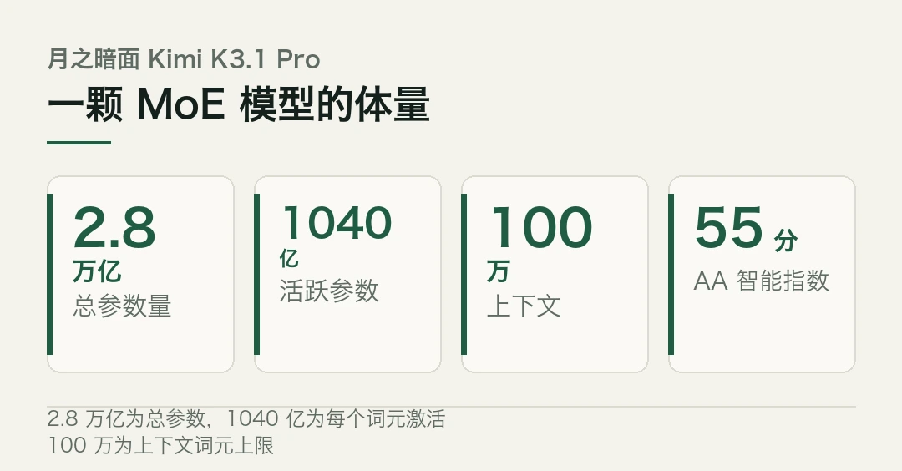
一句话记住：它不是又一个「更大」的模型，是把「开源、便宜、可控」三件事同时往前推了一步。
- 月之暗面 10 月 24 日发布 Kimi K3.1 Pro，总参数约 2.8 万亿（MoE，活跃 1040 亿），100 万词元上下文。
- 在独立评测机构 Artificial Analysis 的智能指数上排第 4，是榜单上排名最高的开源权重模型，得分 55，较上一代 K3 涨 11 分。
- 编程智能体基准 Terminal-Bench 4.0 得分 65.7%，超过 GPT-6 Astra 的 58.2%，仅略低于 Claude Opus 5.5 的 66.4%。
- API 定价每百万输入 2 美元、输出 10 美元，约为 GPT-6 Astra 的五分之一。
- 完整权重 11 月 4 日前开放，届时开源模型与最强闭源模型的差距预计从 12 分收窄到 3 分。
先把排面摆出来
麻烦在于，光看「全球最大开源模型」这句话，容易当成是一句营销话术。麻烦在于，这一次的排面是有第三方数据撑着的。
独立评测机构 Artificial Analysis 把 K3.1 Pro 放在智能指数第 4 位，排在它前面的三家是 Claude Opus 5.5、Sonnet 5.5 和 Muse Wonder Full，得分 55。它同时也是这张榜单上排名最高的开源权重模型。等 11 月 4 日权重真正放出来，这个「开源第一」就会从「即将」变成「在榜」。
更硬的一项在编程智能体上。Terminal-Bench 4.0 考的是让智能体在真实环境里完成实用计算任务，K3.1 Pro 拿到 65.7%。对比一下，GPT-6 Astra 是 58.2%，Claude Opus 5.5 是 66.4%。也就是说，它在最考验「能不能真干活」的基准上，超过了海外最强的闭源模型之一，离另一个只差不到 1 个百分点。
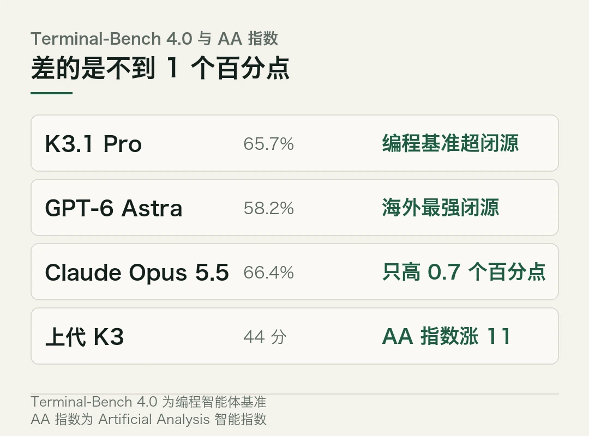
价格那端也在塌。K3.1 Pro 的 API 定价是每百万输入 2 美元、输出 10 美元。同一档的 GPT-6 Astra 大约是它的五倍。
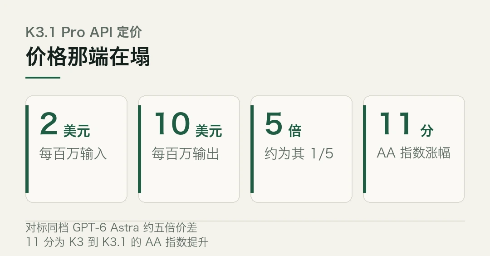
| 档位 | 输入 / 百万 | 输出 / 百万 || --- | --- | --- || K3.1 Pro | 2 美元 | 10 美元 || GPT-6 Astra | 约 10 美元 | 约 50 美元 |
排面摆出来之后，真正的问题不是「它强不强」，而是「开源之后意味着什么」。
强在哪，又怎么做到的
注意一点，K3.1 Pro 不是从零训出来的，它是 K3 的后训练版本。月之暗面把强化学习环节的算力大幅往上加，让模型在数百个下游领域里反复联合训练。
为了把这份算力真正转化成回报，他们重写了技术栈的每一层。强化学习框架、长上下文推理、训练效率、沙箱基础设施、调度系统，全动了。研发团队的说法是，目标是让每一份新增的强化学习算力，都变成稳定、高效的产出。
这种「后训练加码」的打法，和一年前靠堆预训练参数抢榜的路子不一样。换句话说，模型参数规模的天花板没怎么动，动的是训完之后那一段。
天花板没动，动的是训完之后那一段。
一个内部测试能说明长程能力增强了什么。研究人员让 K3.1 Pro 搭一个模拟人体行走的系统，从一开始几步就倒，练到能交替迈步、连续走 11.2 秒，还改掉了肩部肌肉力臂计算里的 36 处错误。这种多步骤、能自我纠错的长程任务，正是后训练强化学习要补的课。
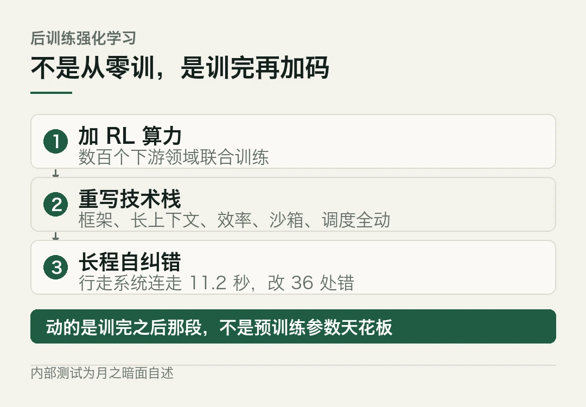
一个有意思的转折
别只看那个 65.7%。这一代在发布的同时，主动做了一件不太常见的事。
月之暗面把网络攻防相关的数据，从训练流水线的多个环节里拿掉了，包括强化学习环境。他们自己的说法是，不打算放出能把网络攻防绝对前沿推进一步的开放权重。在漏洞发现与利用的内部测试上，加了管控的 K3.1 Pro 得分 81.0%，而没加管控的可比版本是 90.5%。
等一下，这组数字的意思值得拆开。为了压住潜在滥用风险，他们有意让模型在某个专项上退了一步。这算不算「阉割」见仁见智，但至少说明一件事，当模型能力到了这个量级，开源不再是单纯的「放出权重」，而是一道关于边界的决定。
能力越强，越要把边界说清楚。
冷判断
得把几个边界讲明白。
第一，权重还没放出来。现在能用的只有 API 和编码工具，真正的权重要等到 11 月 4 日。在那之前，「开源第一」还是预期值，不是手里的实物。
第二，开源不等于白拿。权重放出来之后，要自己有算力、自己跑。对大多数中小团队来说，能审查、能微调、能本地部署，价值在可控，不在免费。
第三，格局在变，但别急着下结论。彭博智库的数据说，中美顶级模型的性能差距已经收窄到约 3%，是历史最小。斯坦福 2026 AI Index 的说法更直接，说这个差距「实质上已经闭合」。不过，清华大学相关学者也提醒，高端算力芯片、底层架构和整体生态，追赶的功课还没做完。
第四，这家公司站在一个特殊时点。彭博此前报道，月之暗面刚完成一轮私募，估值约 500 亿美元，目标 2027 年一季度赴港上市。模型发布和资本动作叠在同一周，不是巧合。
那么，权重放出来之后，到底改变了什么？一家中国公司把旗舰模型的权重准备开放，并在第三方基准上逼近最强闭源模型，同时主动划出安全边界。 这不是「开源赢了」，这是开源这条路，第一次在「能力、价格、可控」三个维度上，同时摸到了闭源的高地。
距离 11 月 4 日还有几天。那之后，才是真正能检验成色的时候。
模型参数「约 2.8 万亿（MoE，活跃 1040 亿）」、100 万词元上下文为官方口径；「智能指数第 4、开源第一、得分 55」来自 Artificial Analysis；Terminal-Bench 4.0 得分 65.7% 来自月之暗面与 Artificial Analysis 的共同引用。
API 定价每百万输入 2 美元、输出 10 美元来自第三方汇总；权重开放时间为「11 月 4 日前」的官方表述。网络攻防管控与漏洞测试得分（81.0% 对 90.5%）为月之暗面自述。
月之暗面 500 亿美元估值、赴港上市时点为彭博报道，非公司公告。本文仅作事实转述。
本文信息来源
- 月之暗面 Kimi API 开放平台 — Kimi K3.1 Pro 模型简介（2026-10-24，官方文档） · platform.kimi.com
- 科技日报 — 月之暗面发布新一代开源模型 Kimi K3.1 Pro（2026-10-24） · stdaily.com
- 北京市科委/中关村管委会 — 月之暗面发布新一代大模型 Kimi K3.1 Pro（2026-10-26） · kw.beijing.gov.cn
- 新京报 — 月之暗面发布新一代大模型 Kimi K3.1 Pro（2026-10-24） · bjnews.com.cn
- China Daily Asia — Moonshot AI launches upgraded Kimi model（2026-10-24） · chinadailyasia.com
- Artificial Analysis — Kimi K3.1 Pro scores 55 on the Intelligence Index（2026-10） · artificialanalysis.ai
- Simon Willison's Weblog — Kimi K3.1 Pro scores 55 on Artificial Analysis（2026-10） · simonwillison.net
- 每日经济新闻 — Kimi K3.1 Pro 深夜「炸场」（2026-10-25） · toutiao.com
02微软开源 Agensh，千个编码智能体无领导协作
10 月 24 日，微软研究院在 GitHub 上以 MIT 许可开源了 Agensh。
一句话说清。这是一个让最多 1024 个编码智能体自行分工、自己合并代码的「无领导」框架，配套的论文 9 月 22 日已经挂上 arXiv，编号 2609.26781。
大多数多智能体框架，背后都蹲着一个「中央编排器」。它负责把任务拆开、分给下面的 worker、再把结果拼回来。当团队越扩越大，这个编排器自己就成了天花板，它必须在一个上下文窗口里看全局、挨个派活、解决冲突。Agensh 的做法是把这个角色整个拿掉。
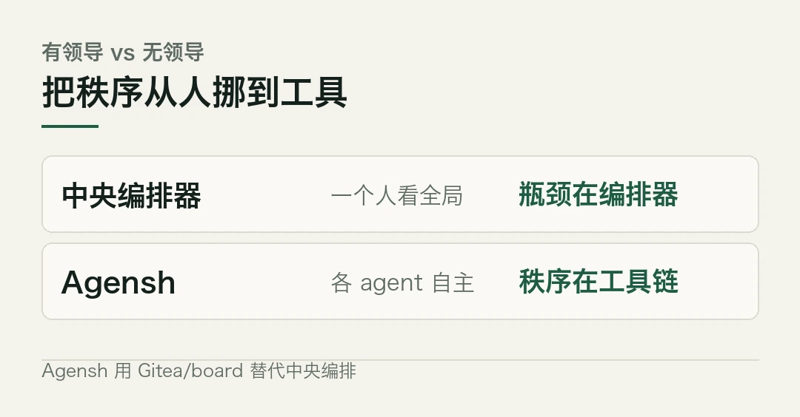
- 微软研究院 10 月 24 日在 GitHub 以 MIT 许可开源 Agensh，论文 9 月 22 日挂 arXiv（2609.26781）。
- 核心主张是「去除中央编排器」：每个智能体自行认领子任务、共享发现、验证结果、合并代码，形成自组织异步协作闭环。
- 在 ProgramBench 最难 5 题上，1 个智能体平均通过率 19.31%，128 个升到 28.78%，相对约 +49%；Pandoc 单任务从 33.89% 升到 1024 个时的 55.06%。
- 协调靠三件普通开发者工具：Gitea（共享代码）、Mattermost（消息）、一个自研 board（共享上下文），每个 worker 由 GitHub Copilot CLI 驱动。
- 代价不小：公开版只跑单机、每 worker 限 64GiB 容器、除模型网关外无外网，且微软明说不会精确复现论文数字。
没有指挥，靠什么不乱
麻烦在于，去掉指挥之后，最让人担心的是一群 agent 各干各的、最后对不上。麻烦在于，Agensh 用一套很朴素的办法接住了这件事。
每个智能体跑的是同一套循环，没有谁比别人高级。先抓上下文，再认领一个没人做的子任务，然后动手、验证、把结果合回去。Gitea 当共享代码库，Mattermost 传消息，board 记录「谁在做什么、谁做完了」。合并走的是零审批的拉取请求，主线禁止直接推送，CI 合并闸门在实验里是关掉的。
每个 worker 内部由 GitHub Copilot CLI 驱动，通过 ACP 会话跑起来。还有一个空闲看门狗，某个 worker 十分钟没动静就会被戳一下。
```bash
# 每个 worker 由 GitHub Copilot CLI 驱动，ACP 会话 + 十分钟看门狗copilot-cli agent --acp --watchdog 600```
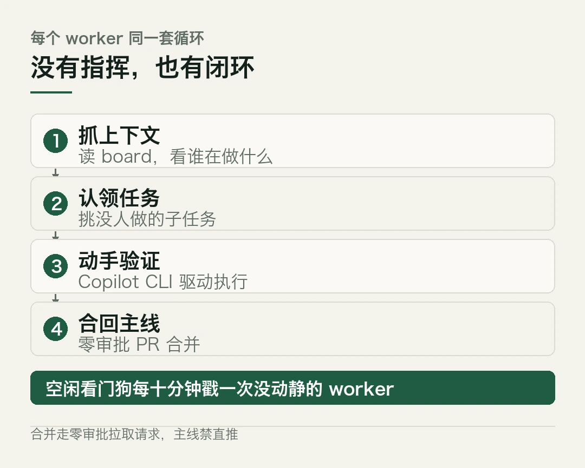
没有指挥，不等于没有秩序，是把秩序从一个人身上挪到了工具链上。
数字怎么涨上去的
注意一点，这里的「1024 个」不是宣传噱头，是真的把规模拉到了这个量级做实验。
微软选了 ProgramBench 里最难的五道题，要求 agent 从可观察行为和文档离线复现参考程序，不能读源码。在 GPT-5.6-sol、高推理强度、限时 6 小时、断网的条件下，平均通过率从 1 个 agent 的 19.31% 升到 128 个的 28.78%。Pandoc 这一道最明显，从单 agent 的 33.89% 一路涨到 1024 个时的 55.06%，同样卡在 6 小时内。
换模型，天花板还能再抬
用 GPT-6.1-sol，Pandoc 从单 agent 的 56.19% 升到 32 个 agent 的 79.59%，相对提升约 42%。
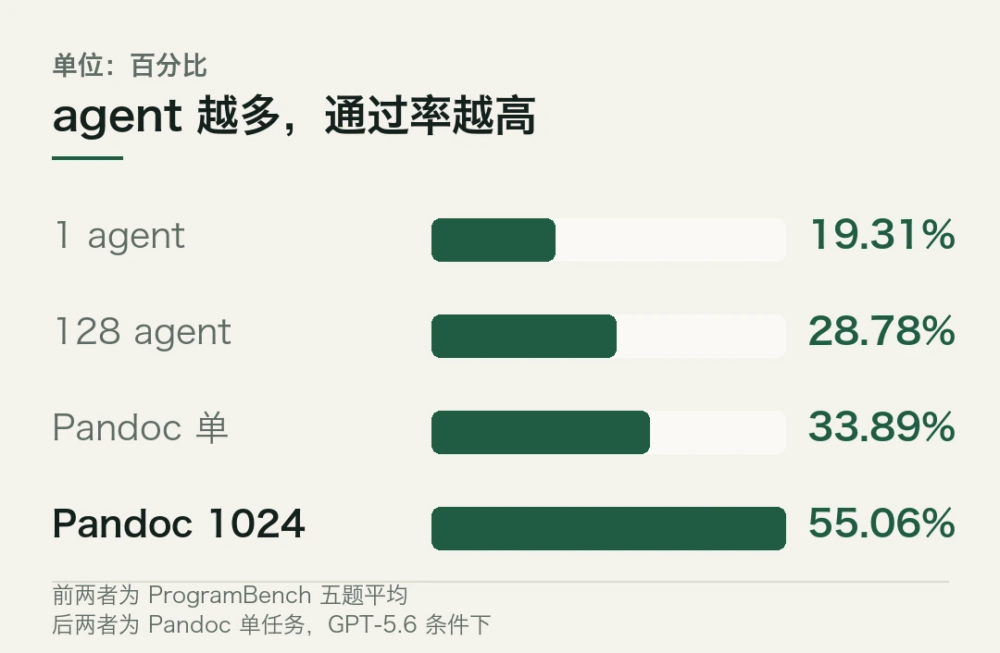
别只看那个 1024
别只看那个最大的数字。论文里还有一个容易被忽略的事实，从 128 个涨到 1024 个，Pandoc 只多了 4.12 个百分点。也就是说，规模带来的收益在边际上明显递减，而且跑一千个 agent 要吃掉大量算力，其中一部分还花在 agent 互相记账上。
成本至今没有公开。没有任何外部团队重复过这个结果。所以这些数字代表的是「在作者设定的条件下成立」，不是「放到你的业务里也成立」。
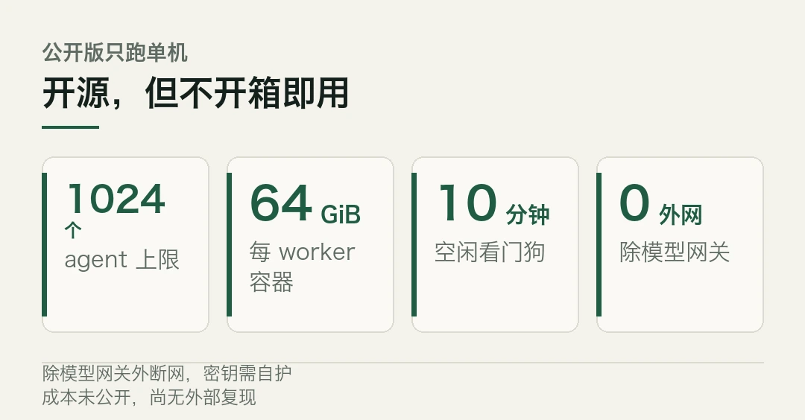
规模是手段，不是答案。
冷判断
得把适用边界说清楚。
第一，它适合的是「能拆成独立小块、每块都能单独验证」的硬编程任务。微软挑的恰恰就是这类。如果你的任务是强顺序依赖、或者解释成本高于执行成本，多 agent 帮不上忙，一个助手加上认真检查反而更划算。
第二，开源不等于开箱即用。GitHub 仓库里是单机版 harness、论文、演示和复现指南。真正要跑，得准备 Linux、Docker、ProgramBench 任务集和模型网关，还得自己保护密钥、读分数、维持环境。
第三，这不是要取代编排器流派。Google 的 Harness² 走的是另一条路，改 agent 自己的指令和工具。两种思路解决的是不同问题，「1024 个 agent」这个数字不能直接和别家的 agent 数放一起比，有的数的是同时在跑的，有的数的是累计启动的。
所以这期工具篇该怎么读？微软把「智能体数量」立成了多智能体组织的一个新扩展维度，并证明在可分解的工程任务上，去中心化协作确实能换来通过率的提升。
它不会让你明天就少写代码。真正的价值在一个值得在单机先试的复现指南：先用单 agent 跑你的真实任务，只有验证结果真的变好，再加人。
Agensh 以 MIT 许可开源、v1.0 含 harness/脚本/复现指南，及「去除中央编排器」的核心主张均来自 GitHub README；论文 9 月 22 日挂 arXiv，作者为微软研究院七人团队。
ProgramBench 五题 1→128 平均通过率 19.31%→28.78%、Pandoc 单任务 33.89%→55.06%（1024）、GPT-6.1-sol 下 56.19%→79.59%（32）均来自论文与 README。
每 worker 64GiB 容器、断网除模型网关、公开版仅单机、不保证复现论文数字为 README 与多篇报道共识。成本未公开、尚无外部复现。本文仅作事实转述。
本文信息来源
- GitHub — microsoft/Agensh（2026-10-24）· MIT 许可，v1.0，README 与复现指南 · github.com
- arXiv — Agensh: Scaling Organizational Intelligence to 1,024 Agents（2026-09-22）· 编号 2609.26781 · arxiv.org
- 集微网 — 微软开源 Agensh：千级智能体「无领导」协作的去中心化编程框架（2026-10-24） · ijiwei.com
- Writeble — Microsoft Research Open-Sources Agensh, a Leaderless Harness That Ran 1,024 Coding Agents（2026-10-26） · writeble.com
- iaenunminuto.com — Microsoft open-sources Agensh, which gets up to 1,024 AI agents working as a team without a central coordinator（2026-10-25） · iaenunminuto.com
- Zentor — What Is Microsoft Agensh? The 1,024-Agent Harness Explained（2026-10） · zentor.ai
- CloudsAI — Agensh 微软研究院推出的多智能体协作框架（2026-10） · cloudsai.cn
- The Decoder — Kimi K3.1 Pro scores 55 on the AA Intelligence Index（2026-10，英文） · the-decoder.com
03REDMI K100 发布，骁龙 8 至尊版配万级电池
10 月 27 日，REDMI 正式发布 K 系列新品 K100。
一句话说清。这台机器定位「双芯魔王，万级续航」，在骁龙 8 至尊版的基础上，首次为 K 系列标准版配上独立的 AI 游戏独显 D2，还塞进了一块 10000mAh 的电池和一块 165Hz 的高刷屏，出厂预装小米澎湃 OS 4。
多数中端机在性能和续航之间要做取舍，K100 的打法是不做取舍，把两块都顶到同档少见的水平。
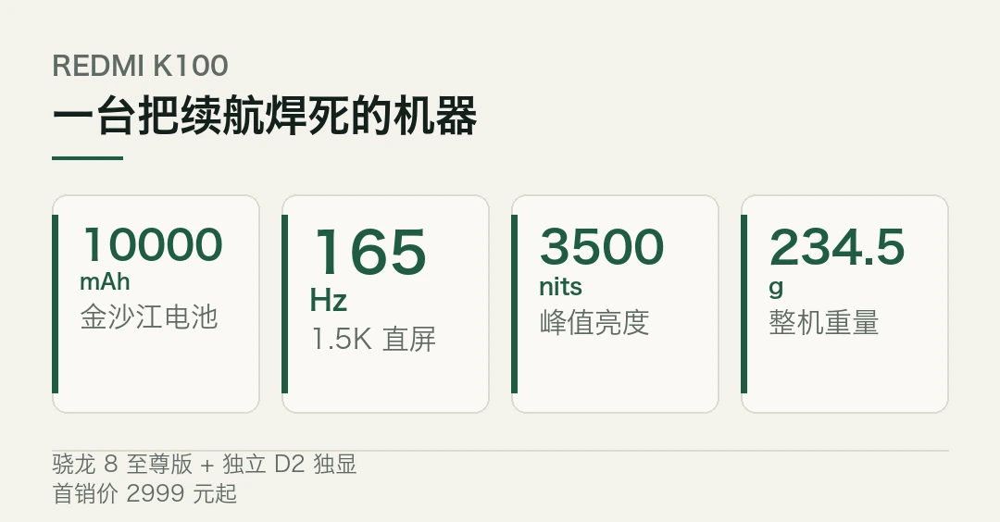
双芯到底指什么
麻烦在于，厂商爱把「双芯」当噱头，听起来像又多了一颗主芯片。麻烦在于，K100 这颗第二芯不是来抢计算主力的，是来补游戏画面的。
骁龙 8 至尊版负责通用算力，全大核架构，最高主频 4.32GHz。D2 是独立的显示协处理器，做的事很专一，插帧、超分、超画，把低帧率的游戏画面补成高帧率，把低分辨率补成 1.5K。
注意一点，D2 的价值不在「性能更强」，在「同样帧率下更省」。REDMI 实测，在知名 FPS 手游的 165 超帧模式下，对比同芯片机型的 GPU 超帧方案，K100 能做到帧率几乎相同，功耗却低 0.51W、机身温度低 1.2℃。
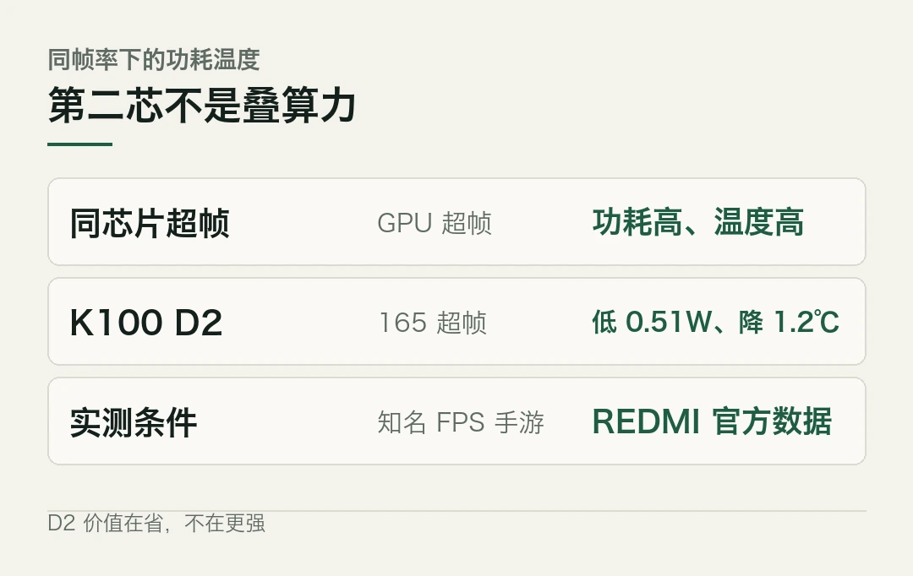
第二芯不是叠算力，是把已有的算力用得更干净。
续航才是真主角
别只看那颗芯片。这台机器最反常规的，是电池。
10000mAh 什么概念。它比很多充电宝还大，是米系手机里容量最大的一块。官方数据，连续刷短剧能撑超过 34 小时，折算下来超千集；低温场景更有说服力，零下 20℃ 仍能连续微信通话 13.3 小时，或连续导航 17.92 小时。
这块电池靠的是硅碳负极，硅碳含量 28%，能量密度做到 957Wh/L。代价是重量，整机 234.5 克，比同尺寸机型沉一些。但它换来了「一天一夜不充电」的余量，REDMI 的数据说，95% 用户的全天耗电不超过 9083mAh。
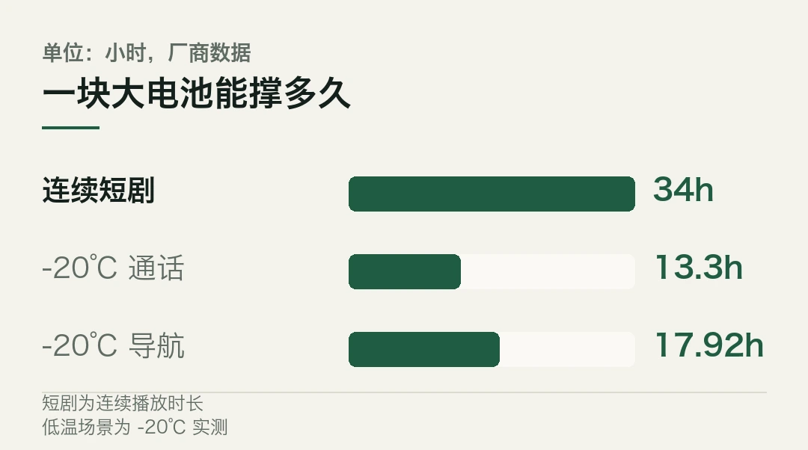
充电不慢。100W 有线快充，标配氮化镓充电器，还支持 27W 有线反充，关键时刻能给耳机、手表回口血。
续航这个维度，K100 是把中端机的天花板往上顶了一档。
高帧游戏生态
游戏是这块屏幕的主场。6.83 英寸 1.5K 直屏，165Hz 刷新率，480Hz 多指触控报点率，瞬时触控采样率最高 3500Hz。REDMI 围绕它搭了一套高帧生态，40 余款游戏支持原生 165 帧，超 100 款游戏支持 165 帧超帧，再配上超 31000mm² 的散热材料总面积。
换句话说，买这台机器的人，大概率是为高帧游戏来的。D2 的超帧和散热面积，就是为长时间高负载把温度压住。
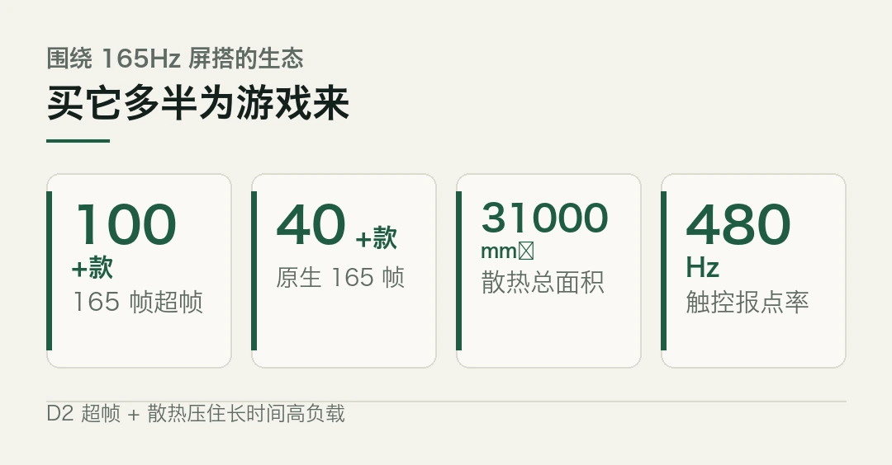
生态比参数更能决定一台游戏手机好不好用。
冷判断
得把几个点说清楚。
第一，它沉。234.5 克加一块大电池，长时间单手握持是有感的。如果你在意轻薄，这台不适合。
第二，芯片不是最新一代。骁龙 8 至尊版是高通此前的旗舰平台，放到 2026 年底不算新，但配 D2 和大电池，定位很明确，要的是「够用且耐用」，不是跑分第一。
第三，价格是真低。原价 3499 元起，双十一特惠 2999 元起，部分地区叠加国补后还能更低。这个定价放在「双芯 + 万级电池」这套组合里，是它最锋利的地方。
那么，这台机器到底给谁？它把「双芯」和「万级电池」两项本属于高端或游戏特化机型的卖点，压进了中端价位，代价是重量和一颗不是最新的主芯片。 对续航焦虑和重度手游用户来说，这笔交易划算；对轻薄党，它劝退。
距离 10 月 31 日首销没几天了。到时候看真实续航和温控的第三方实测，比看参数表更有意义。
骁龙 8 至尊版主频、D2 独显、10000mAh 电池、165Hz 屏幕、澎湃 OS 4、价格与首销时间均以 REDMI 官方发布与小米官网规格页为准。
D2 在 165 超帧模式下对比同芯片机型的功耗低 0.51W、温度低 1.2℃ 为 REDMI 官方实测表述，经多家媒体转述；电池硅碳含量 28%、能量密度 957Wh/L、1600 次循环不低于 80%、-20℃ 续航与 34 小时短剧续航为厂商数据。
游戏适配数量（40+ 原生 / 100+ 超帧）、31000mm² 散热面积为官方口径。NotebookCheck 与 Runtime Chronicle 为英文媒体，其报道中的美元折算为参考。本文仅作事实转述。
本文信息来源
- 小米官网 — REDMI K100 规格参数（2026-10-27，官方） · mi.com
- 小米官网 — REDMI K100 产品页（2026-10-27，官方） · mi.com
- NotebookCheck — Xiaomi launches affordable phone with 10,000mAh battery and 165Hz AMOLED display（2026-10，英文） · notebookcheck.net
- Runtime Chronicle — Redmi K100 surfaces on Geekbench with Snapdragon 8 Elite, 10,000mAh battery and 165Hz display ahead of launch（2026-10，英文） · runtimechronicle.com
- IT 时报（经今日头条）— 3499 元起 REDMI K100 首发独显双芯与万级电池（2026-10-29） · toutiao.com
- 南方+ — 又一款性价比手机来了，REDMI K100 发布，售价 2999 元起（2026-10-28） · nfnews.com
- 消费日报网 — 京东提前部署过万个前置仓站，REDMI K100 开售当天最快 9 分钟送达（2026-10-28） · xfrb.com.cn
- 重庆日报 — REDMI 发布 K100 智能手机及多款生态新品（2026-10-27） · cqrb.cn
- 长沙晚报 — 双芯魔王，万级续航！REDMI K100 正式发布（2026-10-28） · gxlg.icswb.com
- 深圳特区报（经今日头条）— 双芯魔王万级续航来袭 REDMI K100 正式发布（2026-10-28） · toutiao.com
04科技速览，Anthropic 交表，索尼发传感器，XREAL 开售
今天的速览，六条。资本、影像、XR 各占一头，中间夹两条科学和一条机器人。麻烦在于，这几件事看着不相关，背后却都在说同一件事，算力与终端的边界正在被重新画。
海外 · Anthropic 交表，冲击 IPO 估值纪录
Anthropic 10 月 26 日向美国 SEC 公开提交 S-1 注册声明，计划在纳斯达克以代码「ANT」上市。若估值冲到 2 万亿美元，将超过 SpaceX 今年 6 月约 1.77 万亿美元的发行估值，有望刷新 IPO 规模纪录。
文件第一次把这家公司的账本摊开。2026 上半年营收约 163 亿美元，同比增长约 13 倍。净亏损 807 亿美元，其中约 720 亿来自可转换票据等金融工具估值变动的会计费用，并非真金白银的现金支出。运营现金流反而转正，达 39 亿美元。
更值得盯的是算力账单。上半年算力与基础设施支出近 90 亿美元，未来已承诺的云服务与算力采购至少 5180 亿美元。换句话说，这场 IPO 募来的钱，下一步大多要拿去续算力。
那 2 万亿估值，底气到底在哪？答案不在利润表，在那张算力账单里。
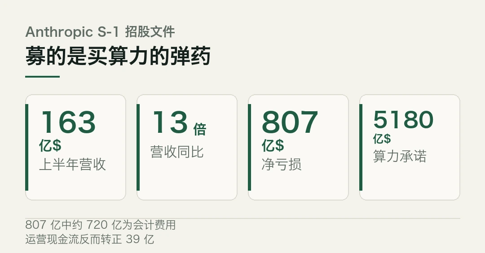
估值可以讲故事，算力账单才是真命题。
海外 · 索尼 LYTIA 720 传感器发布
索尼半导体 10 月 28 日公布手机主摄传感器 LYTIA 720。1/1.56 英寸堆栈式 CMOS，约 5000 万像素，单像素 1.0 微米，主打暗光与 HDR 视频。
暗光一直是手机拍照的软肋，索尼这次想把它补上。注意一点，核心升级是 UHCG 超高转换增益电路，把暗光随机噪点比前代 LYTIA 700 降低约 50%。
再叠加 Hybrid Frame-HDR，动态范围做到 100dB。视频端优化 AD 转换电路后，成为索尼首款在 1/1.56 英寸、1.0 微米规格下，支持全像素对焦 4K 60fps HDR 录制的产品。
计划 11 月上旬量产出货，暂无手机厂商官宣搭载。
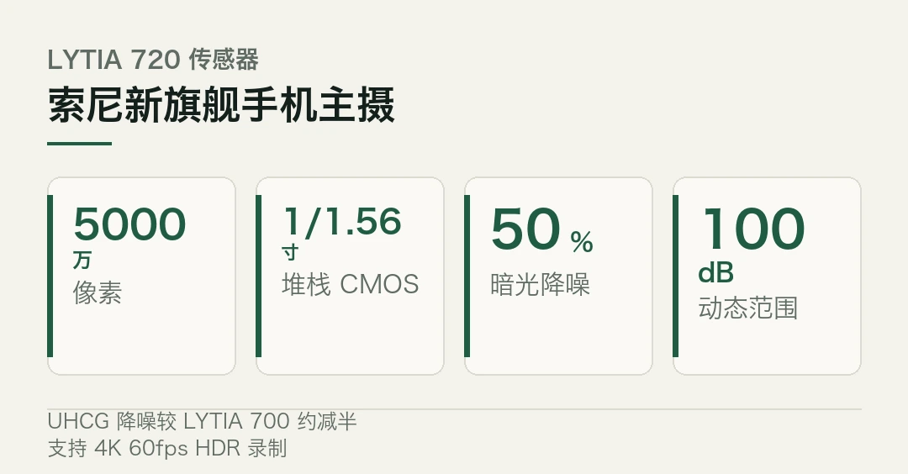
国内 · XREAL AURA 开售，首款 Android XR 有线眼镜
10 月 29 日凌晨，XREAL 在 Google Android 开发者峰会上发布并开售 AURA，全球首款搭载 Android XR 的分体式空间计算眼镜。美国、加拿大、日本、韩国率先订购，12GB+256GB 限时 1099 美元，16GB+512GB 限时 1299 美元，预计 11 月中旬发货。
XREAL 是和 Google、Qualcomm 深度合作的中国科技品牌。别只看那块 95 克的眼镜本体，计算单元挪到了外置盒子里。眼镜本体不到 95 克，什么概念？比不少手机还轻。它配索尼双 Micro-OLED，单眼 1920×1200，视场角 70 度，刷新率 120Hz。
计算单元放在外置盒子里，搭载高通 Snapdragon Reality Elite 与 XREAL 自研 X1S 芯片，内置 Gemini，首发超 150 款 XR 应用。
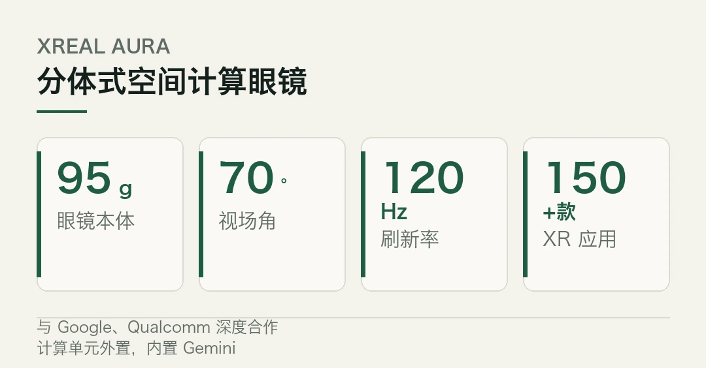
分体不是倒退，是电池和散热还没突破前的工程现实。
国内 · 国产新一代医用重离子加速器建成
中科院近代物理所研发的新一代超紧凑旋转束重离子治疗系统（SIMM），首台示范装置近日在广东惠州建成，进入设备检测阶段，预计年底开展临床试验。
和上一代比，它把占地面积从 4600 平方米压到 1200 平方米，运行能耗降到约三分之一。
年治疗能力从 1000 例提到 2000 至 5000 例。截至 9 月底，国产医用重离子加速器已推广 10 台，完成近 5000 例患者治疗。
这是精准放疗装备从大科学装置走向普惠的一步。
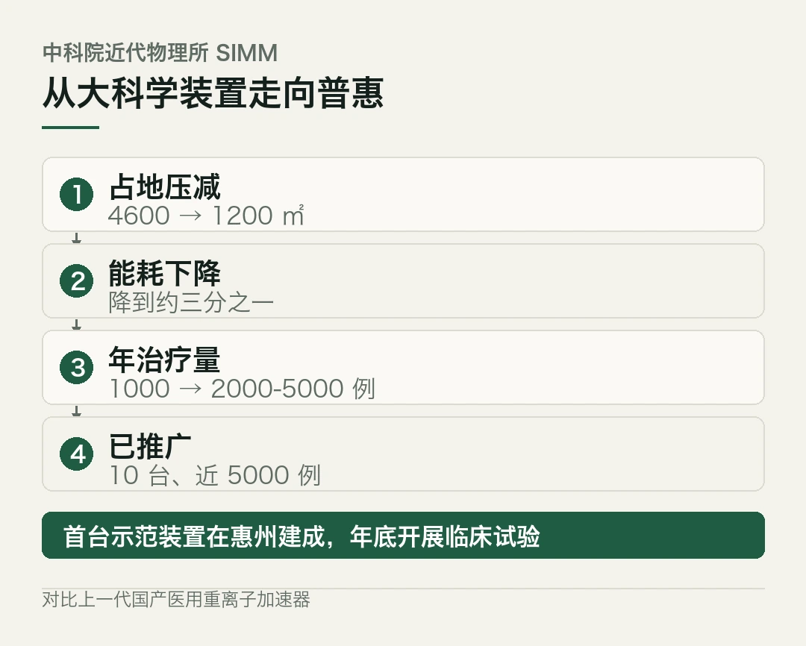
海外 · 太阳宁静区首次看清丝状磁网
日本国立天文台领衔的团队，借球载太阳观测台 Sunrise-III，在《天体物理学杂志通讯》报告，首次在太阳宁静区色球层发现大量细长丝状磁结构。宁静区占太阳表面大部分，磁场弱、地面望远镜易被大气模糊，此前很难看清。
这些丝状结构藏在与光球相连的「磁拱顶」内部。模拟显示，它们由太阳表面扭转运动把磁力线拧成。成果为破解日冕加热之谜提供了新观测线索。
国内 · 智元第 2 万台机器人下线
智元 10 月 29 日创新日上宣布，第 2 万台具身机器人已下线，并发布「部署态」新本体与基座大模型，强调真实上岗而非演示。上海同时提出 8000 台机器人进厂的目标，具身智能从展台走向产线。
那么，这几条放一起看说明了什么？顺着这条线看，资本在给算力续命，终端在把 XR 和影像往前推，而科学和装备在悄悄把底座做实。几条线在同一周交汇，才凑成了今天这盘棋。 热闹在台前，地基在台后。
Anthropic S-1 提交、代码 ANT、目标估值及财务数据来自其招股文件与相关报道（CGTN、经济日报、中国证券网）；720 亿会计费用、5180 亿算力承诺等为文件披露口径。
索尼 LYTIA 720 的规格（1/1.56 英寸、约 5000 万像素、UHCG 降噪约 50%、100dB HDR、4K 60fps HDR）来自索尼半导体公告，经 Silicon Village、MobiFacts、中关村在线、新浪财经转述；量产出货时间以官方为准。
XREAL AURA 的规格与售价来自 XREAL 官方及 Android Headlines、GSMArena、中国日报，发货时间以官网为准。
国产重离子加速器数据来自中科院近代物理所与中国新闻网。太阳宁静区磁结构来自日本国立天文台团队发表于《天体物理学杂志通讯》的研究，经 EurekAlert、GKToday 转述。智元第 2 万台下线来自公开报道。
本文仅作事实转述，不构成任何投资建议。
本文信息来源
- CGTN — Anthropic files for IPO, reveals soaring revenue, massive net losses（2026-10-27，英文） · news.cgtn.com
- 经济日报 — Anthropic 申请纳斯达克 IPO，或创 IPO 估值纪录（2026-10-27） · jingjiribao.cn
- 中国证券网 — 万亿美元估值待考 Anthropic 冲刺 IPO 或成 AI 板块压力测试（2026-10） · cnstock.com
- Silicon Village — Sony Semiconductor Solutions Corporation Today Announced The LYTIA 720（2026-10，英文） · blogspot.siliconvillage.net
- MobiFacts — Sony LYTIA 720: 50MP 1/1.56-inch sensor with 100dB HDR, ships early November（2026-10，英文） · mobifacts.com
- 中关村在线 — 索尼发布 LYTIA 720 传感器：暗光降噪减半，支持 4K60fps 单帧 HDR 视频（2026-10-28） · news.zol.com.cn
- 新浪财经 — 索尼发布 LYTIA 720 传感器 暗光及 HDR 视频表现大幅提升（2026-10-29） · finance.sina.cn
- XREAL 官网 — Project Aura at Google I/O 2026（2026-10-29，官方，英文） · xreal.com
- Android Headlines — XREAL AURA Launches Today, but the Best Price Won't Last（2026-10，英文） · androidheadlines.com
- GSMArena — Xreal Aura glasses unveiled with Android XR and the new Snapdragon Reality Elite（2026-10，英文） · gsmarena.com
- 中国日报网 — XREAL AURA 正式发布，全球首款搭载 Android XR 的分体式空间计算 XR 眼镜（2026-10-29） · ex.chinadaily.com.cn
- 中国新闻网 — 中国新一代医用重离子加速器首台示范装置建成（2026-10-23） · m.chinanews.com
- EurekAlert! — Stratospheric observatory Sunrise-III reveals intricate solar magnetic structures（2026-10，英文） · eurekalert.org
- GKToday — Astronomers Detect Magnetic Threads Above the Sun（2026-10，英文） · gktoday.in
- The Astrophysical Journal Letters — Three-dimensional Magnetic Field Structure of a Quiet-Sun Region Revealed by Sunrise III/SCIP（2026-10-24）· DOI 10.3847/2041-8213/ae909b · iopscience.iop.org
- 今日头条 — 2026 年 10 月 29 日科技晨报（智元第 2 万台机器人下线）（2026-10-29） · toutiao.com
本文首发于公众号「YITENG」。原文：daily.html
留言